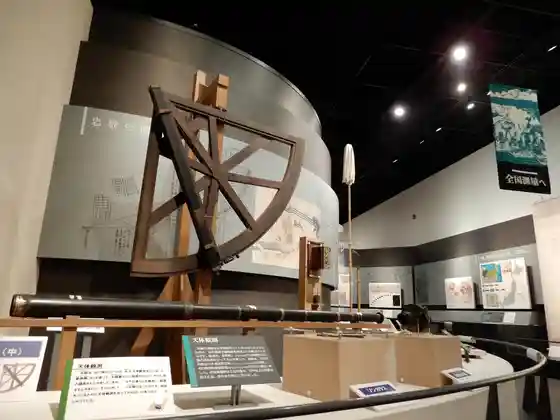
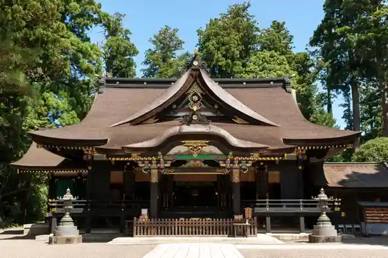
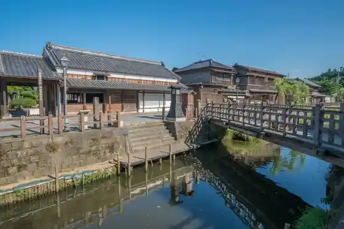
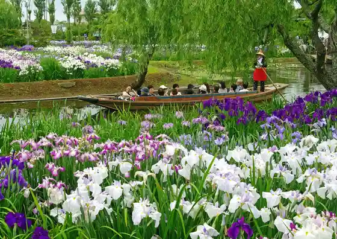

Sazae Ko Sawara Fune Meguri
Katori, Chiba · 0478-55-9380 · Official / source link
Ino Tadataka Memorial Museum
Katori, Chiba · 0478-54-1118 · Official / source link

Katori Shrine
Katori, Chiba · 0478-57-3211 · Official / source link

Ino Tadataka Kyutaku
Katori, Chiba · 0478-54-1118 · Official / source link

Suigo Sawara Ayame Park
Katori, Chiba · 0478-56-0411 · Official / source link

Roadside Station Kawa no Eki Mizu no Sato Sawara
Katori, Chiba · 0478-50-1183 · Official / source link
Roadside Station Kurimoto Kurenai Sho Town no Sato
Katori, Chiba · 0478-70-5151 · Official / source link
Suigo Sawara Dashi Hall
Katori, Chiba · 0478-52-4104 · Official / source link
Sawara Town Ya Kan (Kamikawa Kishi Sho Park)
Katori, Chiba · 0478-79-9385 · Official / source link
Kanpuku Tera
Katori, Chiba · 0478-52-2804 · Official / source link
Sawara Streetscape Koryu Kan Sawara Mitsubishi Kan
Katori, Chiba · 0478-52-1000 · Official / source link
Farm Resort THE FARM
Katori, Chiba · 057-00-11831 · Official / source link
Higashi Kaoru Shuzo
Katori, Chiba · 0478-55-1122 · Official / source link
Omigawa Shiroyama Park
Katori, Chiba · 0478-50-1232 · Official / source link
Kisetsu no Hana (Fuji) / Suigo Sawara Ayame Park
Katori, Chiba · Official / source link
Yamasu Kura Fudo Village
Katori, Chiba · 0478-78-5733 · Official / source link
Fu Uma no Dai Kusu
Katori, Chiba · 0478-50-1224 · Official / source link
O no Farm
Katori, Chiba · 0478-75-1123 · Official / source link